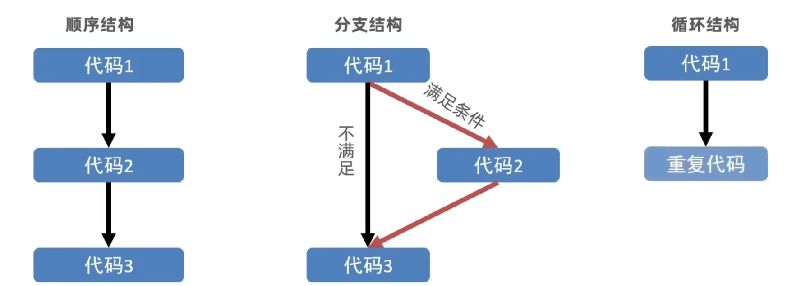

JavaScript是一种运行在客户端(浏览器)的编程语言,实现人机交互效果
ECMAScript:
规定了js基础语法核心知识
Web APIs：
直接写在html文件内，用script标签包住
规范 ：script标签写在
<body> <script> // 页面弹出警示框 </script></body>代码写在以 .js结尾的文件里，通过script标签引入到html页面中。
xxxxxxxxxx<body> <script src="my.js"> // 中间不要写内容，默认忽略 </script></body>代码写在标签内部
xxxxxxxxxx<body> <button onclick="alert('逗你玩~~~')">点我月薪过万</button></body>1.3 JavaScript注释和结束符
单行注释
符号：//
快捷键：ctrl+/
xxxxxxxxxx<body> <script src="my.js"> // 这是单行注释噢 </script></body>多行注释
符号：/* */
快捷键：shift+alt+a
xxxxxxxxxx<body> <script src="my.js"> /* 这是多行注释噢 */ </script></body>
人和计算机打交道的规则约定
语法1：document
xxxxxxxxxxdocumet.write('要输出的内容')作用：向body内输出内容
注意：如果输出的内容写的时标签，也会被解析成网页元素
语法2：alert
xxxxxxxxxxalert('要弹出的内容')作用：页面弹出警告对话框
语法3：console
xxxxxxxxxxconsole.log('控制台打印')作用：控制台输出语法，程序员调试使用
语法：prompt
xxxxxxxxxxprompt('请输入您的姓名：')作用：显示一个对话框，对话框中包含一条文字信息，用来提示用户输入文字
在计算机科学中，字面量（literal）是在计算机中描述 事/物
字面量是值的表示方式，而变量是存储值的容器。
变量是计算机存储数据的“容器”，变量不是数据本身
xxxxxxxxxxlet 变量名xxxxxxxxxx变量 = 数据 xxxxxxxxxxlet 变量名 = 数据程序在内存中申请的一块用来存放数据的小空间
起名要有意义
遵循小驼峰命名法
var声明
数组（Array），将一组数据存储再单个变量名下的方式，数组可以存储任何类型的数据
xxxxxxxxxxlet 数组名 = [数据1, 数据2, 数据3, . . . ,数据n]xxxxxxxxxx使用数组： 数组名[索引号] // 从0开始使用const声明的变量称为常量，当某个变量永远不会改变时，就可以使用const
常量不允许重新赋值，声明时必须赋值
整数、小数、整数、负数，都是数字类型
注意：JavaScript是弱数据类型语言，只有赋值了之后才知道是什么类型
+、 - 、* 、/ 、%(取模)
NaN：代表计算错误
通过单引号(' ')、双引号(" ")或反引号(`)包裹的数据都叫字符串
必要时使用转义符 \
运算符：+ 可以实现字符串拼接
xxxxxxxxxx<script> let age = 18 document.write(`我今年${age}岁了`)</script>只有两个固定的值true（真）、false（假）
只声明变量，不赋值的情况下，变量的默认值为undefined
代表"无"、"空" 或 "值未知"
使用场景：将来有个变量里面存放的是一个对象，但是对象还没创建好，可以先给个null
xxxxxxxxxxconsole.log(undefined +1) // = NaNconsole.log(nulll +1) // = 1通过typeof关键字检测数据类型
xxxxxxxxxxtypeof x // (常用写法)作为运算符typeof(x) // 函数形式某些运算符被执行时，系统内部自动将数据类型进行转换
+号作为正号解析可以转换成数字型
xxxxxxxxxxconsole.log(+'123') // 此时123将转换为数字型任何数据和字符串相加的结果都是字符串
写代码告诉系统要转换成什么数据类型
xxxxxxxxxxNumber() // 转换为数字型 parseInt // 只保留整数 parseFloat // 可以保留小数输入两个数，计算和，打印到弹窗中
xxxxxxxxxxlet num1 = Number(prompt('请输入第一个数'))let num2 = Number(prompt('请输入第二个数'))let sum = num1 + num2 alert(`这两个数和为：${num1 + num2}`)x<html lang="en"><head> <meta charset="UTF-8"> <meta name="viewport" content="width=device-width, user-scalable=no, initial-scale=1.0, maximum-scale=1.0, minimum-scale=1.0"> <meta http-equiv="X-UA-Compatible" content="ie=edge"> <title>Document</title> <style> h2 { text-align: center; }
table { border-collapse: collapse; height: 80px; margin: 0 auto; text-align: center; }
th, td { padding: 5px 20px; }
table, th, td { border: 1px solid #000000; } </style></head><body><h2>订单确认</h2>
<script> // 用户输入 let price = Number(prompt('请输入商品价格')) let num = Number(prompt('请输入商品数量')) let address = prompt('请输入收货地址') // 计算总价 let total = price * num // 页面打印 document.write(` <table> <tr> <th>商品名称</th> <th>商品价格</th> <th>商品数量</th> <th>总价</th> <th>收货地址</th> </tr> <tr> <td>小米手机</td> <td>${price}元</td> <td>${num}</td> <td>${total}元</td> <td>${address}</td> </tr> </table>
`)</script></body></html>众多的JavaScript的运算可以根据所需表达式的个数，分为一元运算符、二元运算符、三元运算符
符号：++
作用：让变量的值+1
语法：
前置自增：
xxxxxxxxxxlet i = 1++i // 每次加一后置自增：
xxxxxxxxxxlet i = 1i++ //每次加一区别：
单独使用没有区别
xxxxxxxxxx++i +1 =3 //前置自增:先自加再使用（++在前，先加）1++ +1 =2 //后置自增:先使用再自增（++在后，后加）//前自增的运算级别高先自增再相加，后自增为先相加再（i自增）注意是i自增，不是结果自增。用法：
'>'
'<'
'>='
'<='
==
===: 左右两边是否类型和值都相等
!=
!==: 左右两边石佛不全等‘
字符串比较，按照ASCII码比较
NaN不等与任何值，包括它本身
尽量不要比较小数
用于解决多重条件判断
例如：5 < num < 10
xxxxxxxxxxnum > 5 && num < 10| 优先级 | 运算符 | 顺序 |
|---|---|---|
| 1 | 小括号 | （） |
| 2 | 一元运算符 | ++ -- ! |
| 3 | 算数运算符 | 先 * / % 后 + - |
| 4 | 关系运算符 | > >= < <= |
| 5 | 相等运算符 | == =! === !== |
| 6 | 相等运算符 | 先 && 后 | | |
| 7 | 赋值运算符 | = |
| 8 | 逗号运算符 | , |
表达式：表达式是可以被求值的代码，JavaScript引擎会将其计算出一个结果
语句：是一段可以执行的代码
比如：proompt()可以弹出一个输入框，还有if语句 for循环语句等等
区别：

if语句三种使用：单分支、双分支、多分支
xxxxxxxxxxif (条件) { 满足条件要执行的代码}xxxxxxxxxxif (条件) { 1、满足条件要执行的代码} else { 2、不满足条件要执行的代码}括号内条件为true时，执行第一串代码
括号内条件为false时，执行第二串代码
xxxxxxxxxx练习：判断是否为闰年// 用户输入let year = Number(prompt('请输入年份'))// 判断输出if (year % 4 === 0 && year % 100 !== 0 || year % 400 !== 0) { alert(`${year}是闰年`)} else { alert(`${year}不是闰年`)}xxxxxxxxxxif (条件1) { 代码1} else if (条件2) { 代码2} else if (条件3) { 代码3} else { 代码n}语法：
xxxxxxxxxx条件 ? 满足条件执行的代码 : 不满足条件执行的代码使用场景：比if双分支更简单的写法，可以使用三元表达式
一般用同于取值
xxxxxxxxxxlet max = 3 < 5 ? 5 : 3 // 定义一个变量max 如果3 < 5为真，则max=5，否则max=3xxxxxxxxxx// 数字补0// 用户输入let num = +prompt('请输入数字')// 判断输出num = num < 10 ? '0' + num : numalert(num)
语法：
xxxxxxxxxxswitch (数据) { case 值1: 代码1 break case 值2: 代码2 break default: 代码n break}释义：
注意：一定要加上break
循环重复执行一些操作
释义：在满足条件期间重复执行某些代码
语法：
xxxxxxxxxxwhile (循环条件) { 要重复执行的代码（循环体）}当小括号里的条件为true才会进入循环体执行代码
while大括号里代码执行完毕后不会跳出，而是继续回到小括号里判断条件是否满足，若满足又执行大括号里的代码，然后再回到小括号判断条件，直到括号内条件不满足，即跳出
while循环三要素
变量的其实值
终止条件
变量变化量（自增或自减）
xxxxxxxxxxlet i = 1 //变量起始值while(i<=3){ //终止条件 document.write('我会循环3次') i++ //变量变化量}作用：重复执行代码
好处：把声明起始值、循环条件、变化值写到一起，让人一目了然，时最常用的循环形式
语法：
xxxxxxxxxxfor (变量起始值; 终止条件; 变量变化量){ //循环体}xxxxxxxxxx// 无限循环for (; ;) { console.log(11)}语法
xxxxxxxxxxfor (外部声明记录循环次数的变量; 循环条件; 变化值) { for (内部声明记录循环次数的变量; 循环条件; 变化值){ 循环体 }}xxxxxxxxxxlet name = ['马超','赵云','张飞','关羽','黄忠'] for (let i = 0; i <= name.length-1; i++) { document.write(`${name[i]}<br>`) }
循环结束：
区别：